15 jours d'aventure • Cantabrie • Asturies • Galice
👨👩👧👧 Charlie • Sacha • Tessa + Agathe les weekends !
15 jours • Du 4 au 18 juillet 2026 • ~2000 km
Il y a 2 ans — déjà magique avec Charlie & Sacha. Cette fois, Tessa est de la partie ! 🧡
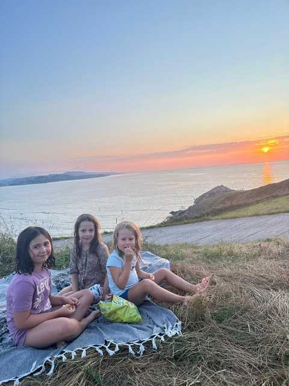
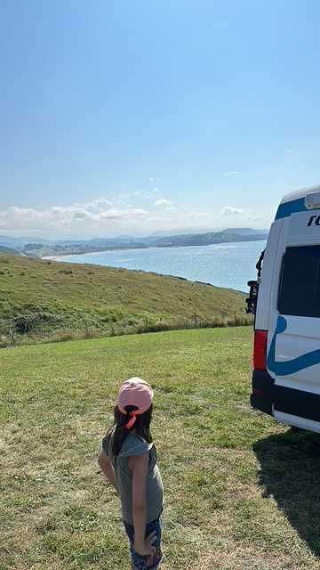
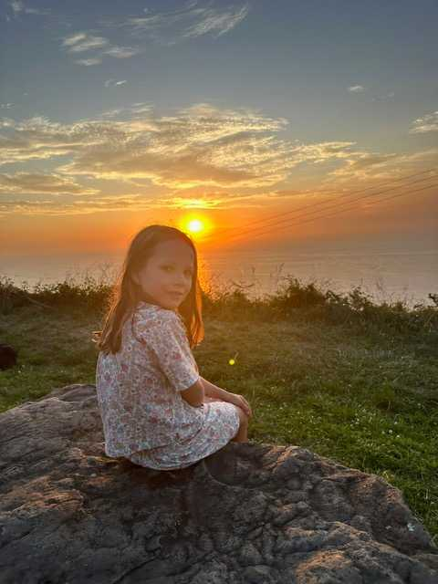
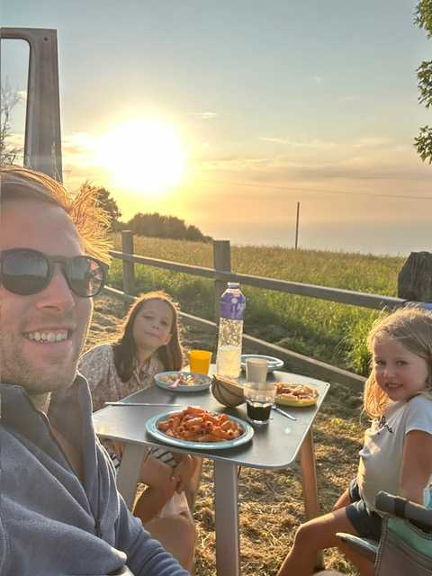
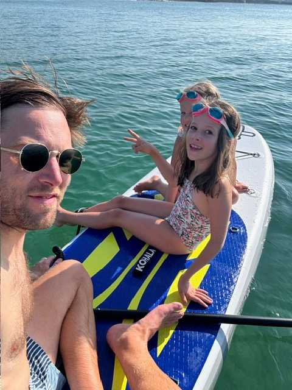
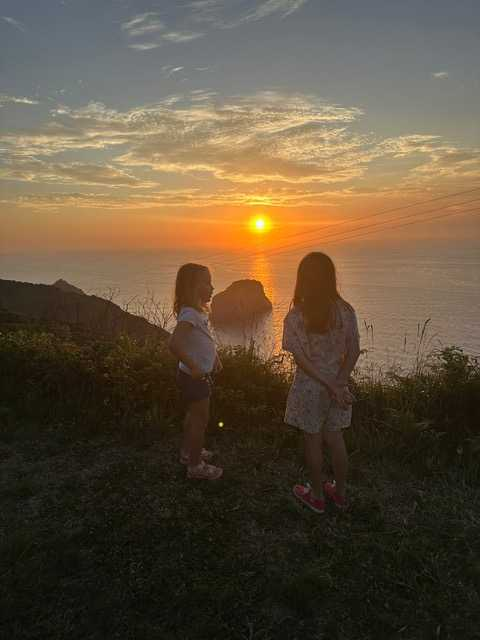
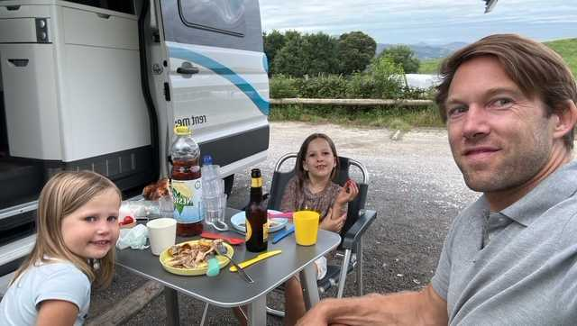
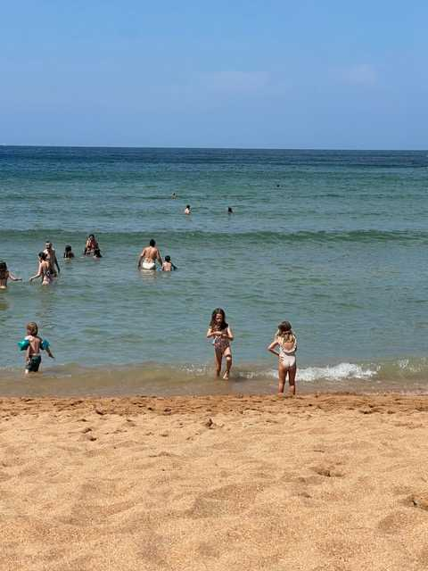
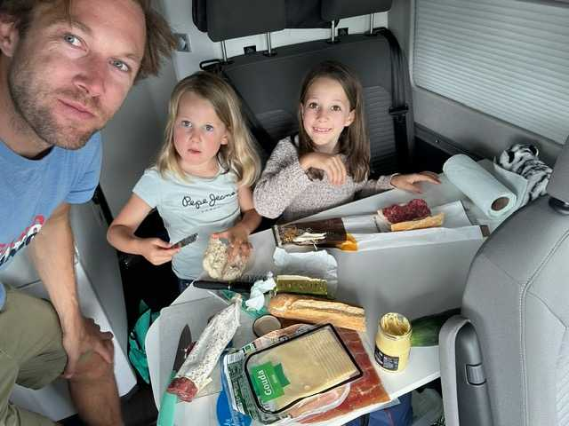
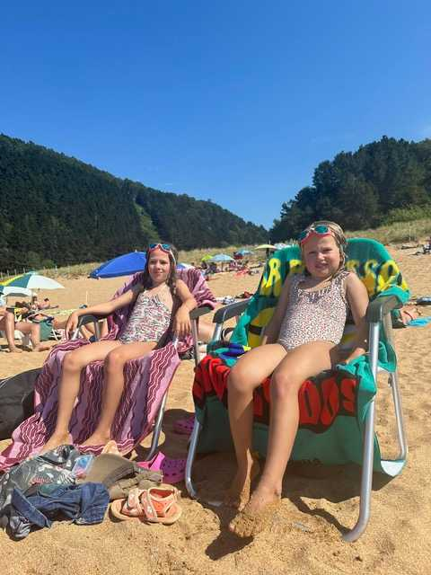
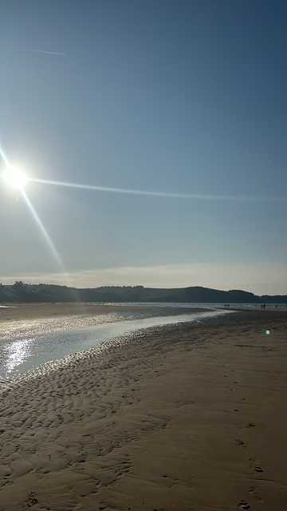
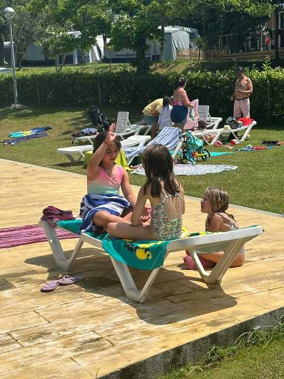
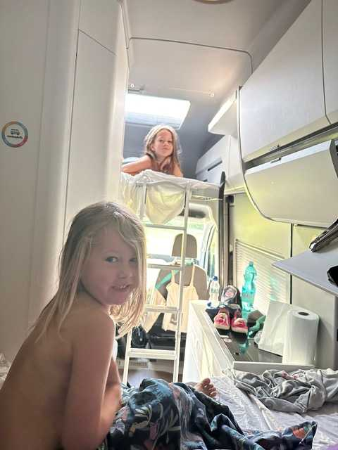
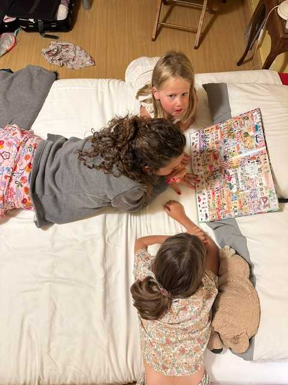
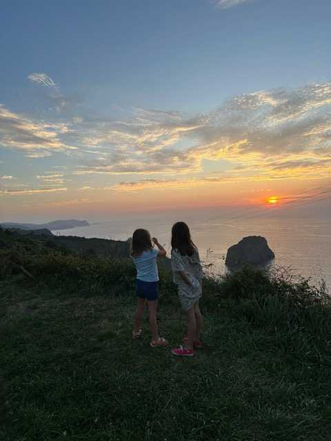
Les Cíes c'est LE moment fort du voyage. Mais ça se prépare :
Maman rejoint l'aventure pour les meilleurs moments !
Sam 4 → Lun 6 juillet
💡 Horaire idéal : Drop Agathe ~10h à BIO, puis tu continues vers Playa Joyel (~1h). Arrivée camping pour le déjeuner !
Ven 10 → Lun 13 juillet
💡 Agathe profite de Covadonga + Baiona = les 2 meilleurs moments du trip ! Et VGO est à 20 min du camping. Zéro détour.
🛫 Lun 6 juillet
Bilbao (BIO) → Barcelona (BCN)
Vueling • ~1h15 • ~40-80€
✈️ Ven 10 juillet
Barcelona (BCN) → Asturies (OVD)
Vueling/Volotea • ~1h30 • ~50-100€
🛫 Lun 13 juillet
Vigo (VGO) → Barcelona (BCN)
Ryanair/Vueling • ~1h30 • ~50-100€
Tous les spots testés et approuvés — réservez vite !
Le meilleur du trip classé par type — que du bonheur !
Pas de piège à touristes ! On mange comme les locaux, cuisine de qualité, prix doux, terrasses où les filles peuvent bouger.
Tout ce qu'il faut savoir pour un trip sans stress